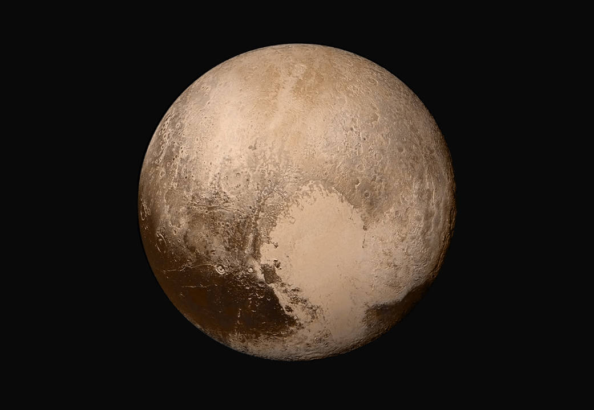 | |
| Courtesy NASA. |
In July, 2015, a spacecraft, the New Horizons, flew by Pluto. Because of the long distance, data was transferred at a rate of about 120 bytes per second. It took more than a year to transmit all the data collected back to Earth. The above photo is a global mosaic of Pluto in true color. Below shows some icy mountains.
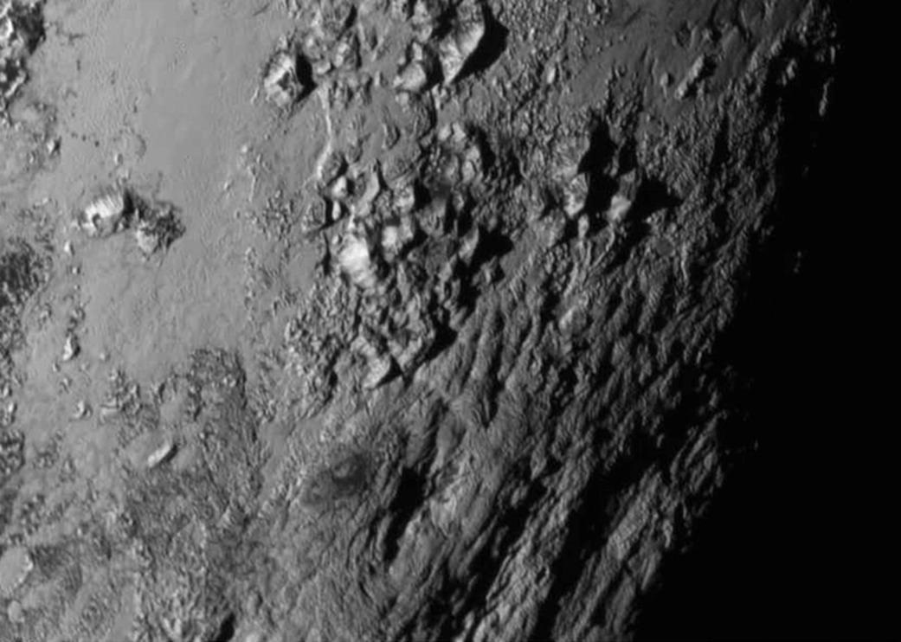 | |
| Courtesy NASA. |
The orbit of Pluto is special. It is inclined 17.2° to the ecliptic. Moreover, part of its orbit lies inside Neptune's. As a result, Neptune was even farther away from the Sun from 1979 to 1999.
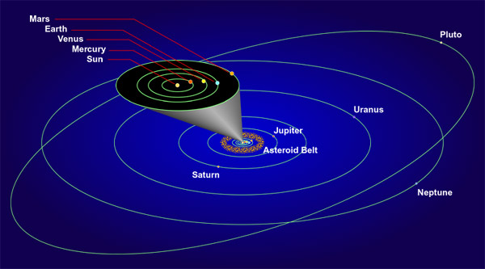
Pluto's surface and its weak atmosphere are made up of nitrogen. From its density, we know that it is rocky.
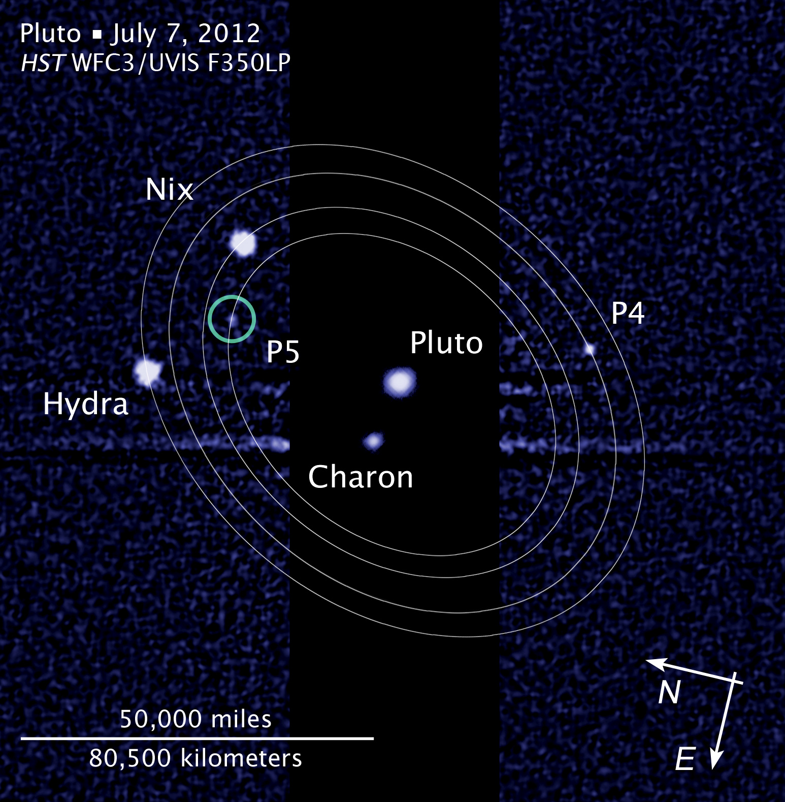 |
| Courtesy HubbleSite. |
We have discovered five satellites of Pluto. The largest one is called Charon. Below is a composite photo of Pluto and Charon, by New Horizons. Charon's diameter is about 1200km, which is relatively very large, over one half of Pluto's. Moreover, the time for Charon to go around Pluto is the same as the rotational period of Pluto. Therefore, Charon is a synchronous satellite. In other words, you will never see Charon on one half of the surface of Pluto, but you will always see it at a fixed position on the sky on the remaining half of Pluto. Last but not least, it is the only natural synchronous satellite in our solar system.
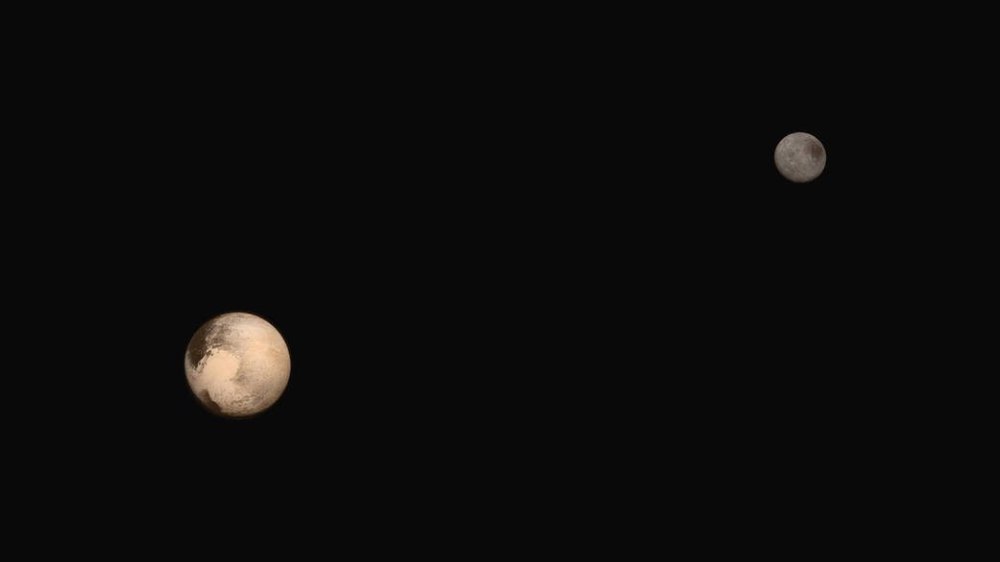 | |
| Courtesy NASA. |
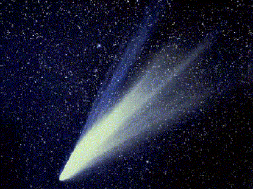 | |
| Courtesy NASA. |
Comets are usually modeled as "dirty snowballs." A comet consists
of a tiny nucleus with diameter less than 10km. The nucleus is made up of
frozen gases and dust. When it approaches the Sun, some
gases will be vaporized and an extended coma will then be produced.
When it moves even closer to the Sun, the solar wind (charged particles
ejected from the Sun) and the Sun's radiation pressure
(See Chapter 11.) push the dust
and gases of the comets away, this will result in a beautiful
long tail. From this, we know why the comet tail is always pointing
away from the Sun.
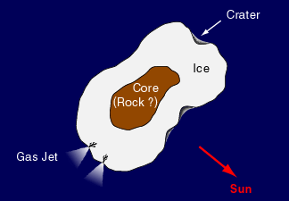
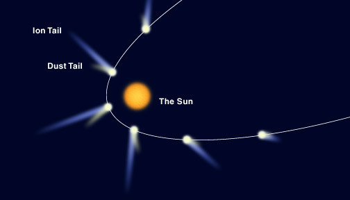
Comets have closed orbits (actually it is elliptical). They will visit the Sun again and again, although the periods could be very long. Perhaps the most famous one is the Comet Halley, it has a closed orbit with a period of 76 years. Unlike Comet Halley, the average distances from the Sun of most comets are greater than that of Pluto.
In November, 2014, ESA's Rosetta mission sent its probe Philae to land on the comet 67P/C-G. Below is a photo of the nucleus.
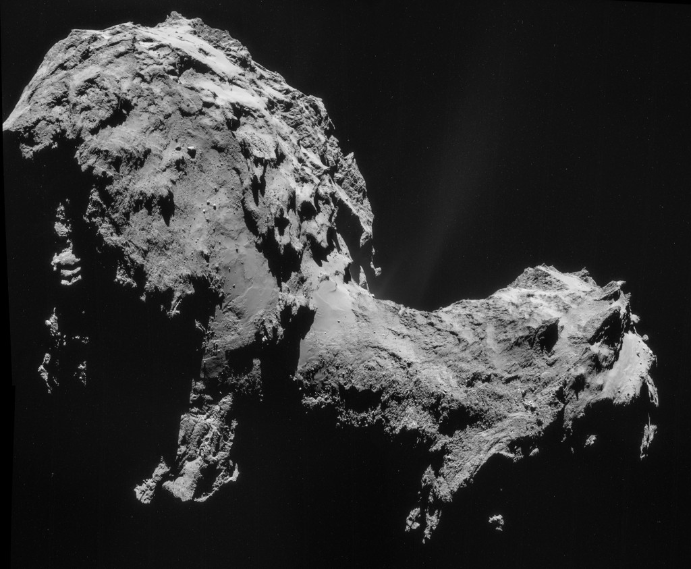 |
| Courtesy ESA. |
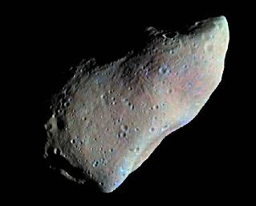 |
| Courtesy JPL/NASA. |
This one is the asteroid Ida. Note its little moon (satellite), Dactyl, at the right.
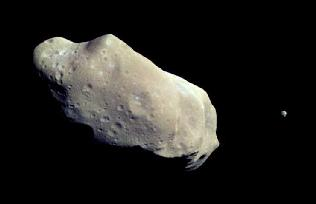 |
| Courtesy JPL/NASA. |
When we take long exposure photos, asteroid may show up as a long trail. In fact, most of the asteroids are discovered in this way.
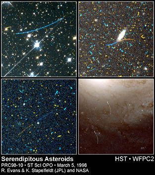 |
| Courtesy STScI. |
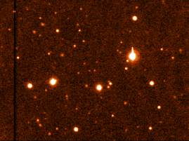 | |
| Courtesy M. Brown, C. Trujullo and D. Rabinowitz . |
Discovery of Kuiper Belt Objects challenges our view on major and minor planets. More importantly, in depth study of Kuiper Belt Objects may help us to further understand the origin of our Solar System.
* All Kuiper Belt Object data mentioned in this chapter are valid as in Aug 2014.
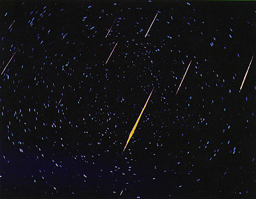 | |
| Courtesy NASA. |
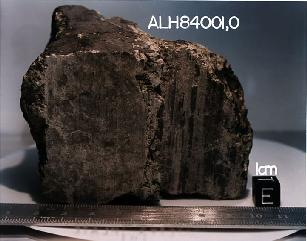 |
| Courtesy NASA. |
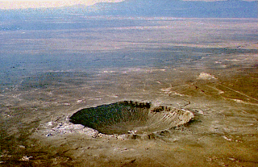 |
| Courtesy NASA and D. Roddy of the US Geological Survey. |